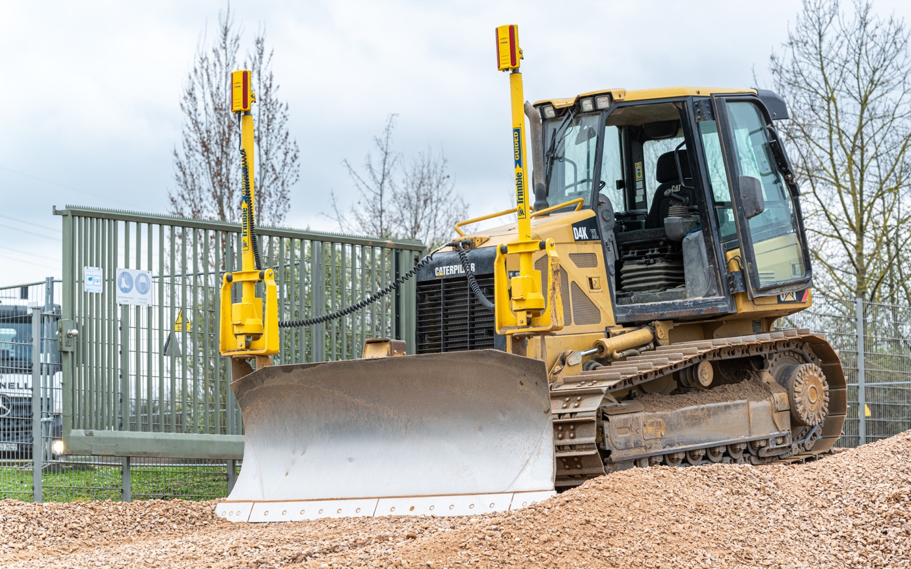

Annehmen
Mineralische Materialien werden an den vorgesehenen Standorten kontrolliert angenommen.

Kreislaufwirtschaft
Geeigneter Betonaufbruch und mineralischer Bauschutt werden angenommen, aufbereitet und als Recyclingbaustoffe erneut eingesetzt.
Vom Rückbau zum Baustoff
Mineralische Materialien werden an den vorgesehenen Standorten kontrolliert angenommen.
Das Material wird gebrochen, gesiebt und für definierte Körnungen aufbereitet.
Ausgewählte Recyclingprodukte werden durch externe Institute überwacht oder geprüft.
Die aufbereiteten Baustoffe kommen beispielsweise im Straßen-, Leitungs- und Erdbau wieder zum Einsatz.
Aufbereitete Materialien
Die Eignung hängt vom konkreten Produkt und Vorhaben ab. Unser Fachbereich berät zur passenden Verwendung.
Frostschutzschichten für Straßen, Plätze und Wege
Verfüllung, Hinterfüllung sowie Erd- und Landschaftsbau
Abdeck- und Füllsand
Recyclingstandorte
Mineralische Recyclinganlagen betreibt die Schnell Gruppe in Ingelheim und Bad Kreuznach. Annahmebedingungen bitte vor der Anlieferung prüfen.